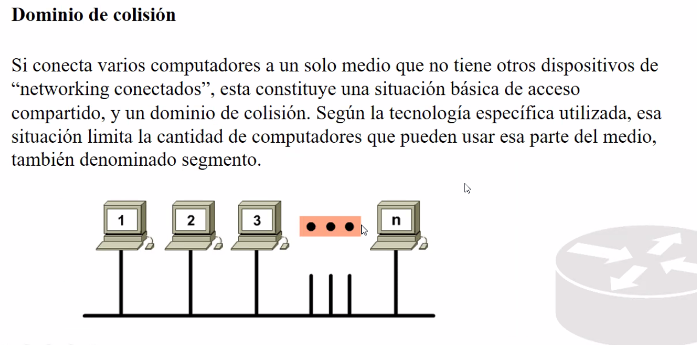

Limitar o segmentar el dominio de colision.
El puente separa segmentos (medios) pero cuando el punete esta desactivado, se limita el trafico para que las maquinas de casa segmento se puedan connectar sin provlemas.